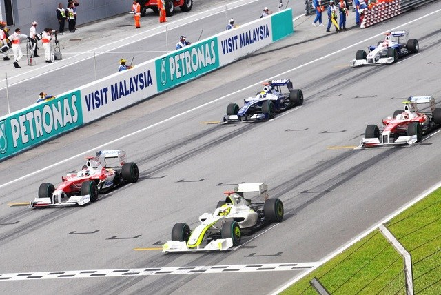
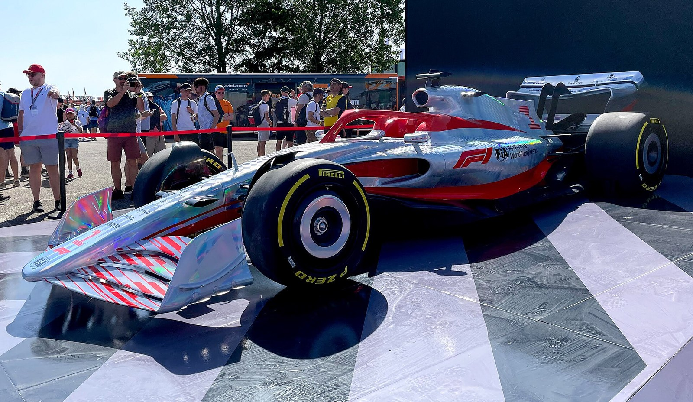
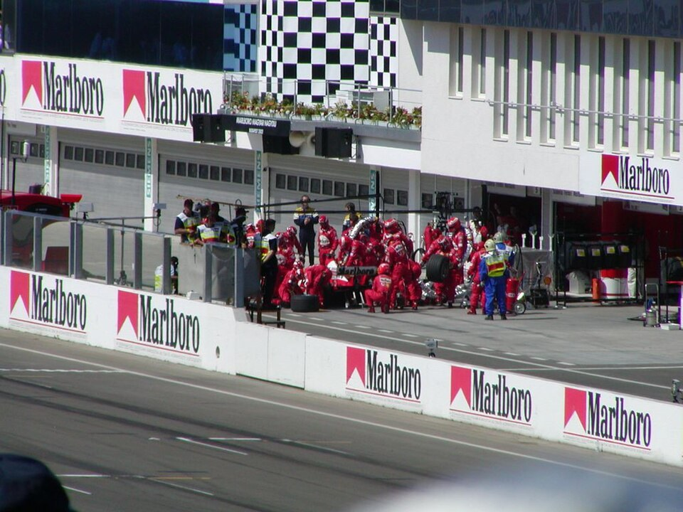
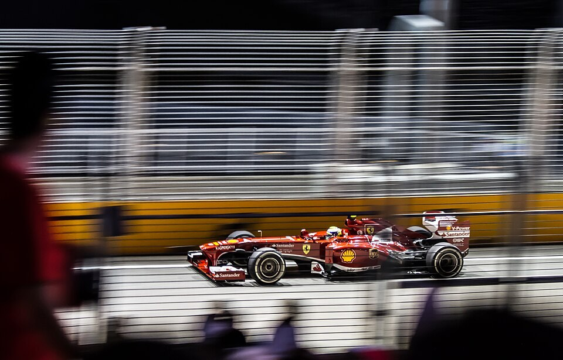

A emoção de um Grande Prêmio
Veja alguns momentos importantes de uma corrida de Fórmula 1.

Largada do grid
Um dos momentos mais disputados da corrida.

Aerodinâmica
Design e tecnologia para alcançar alto desempenho.

Pit stop
Uma parada rápida pode mudar o resultado da prova.

Corrida noturna
Luzes, velocidade e muita concentração.
Mais momentos da corrida
Outras imagens que mostram detalhes importantes da Fórmula 1.
Conheça mais sobre os carros de F1
Os cards ficam em 1 coluna no celular, 2 colunas em telas médias e 4 colunas em telas grandes.
Largada
A largada pode definir posições importantes logo no começo da corrida.
Conheça mais
Aerodinâmica
As asas e o formato do carro ajudam na estabilidade em alta velocidade.
Conheça mais
Pit Stop
A parada nos boxes precisa ser rápida e muito bem planejada.
Conheça mais
Corrida Noturna
As corridas noturnas têm um visual marcante e exigem muita concentração.
Conheça mais